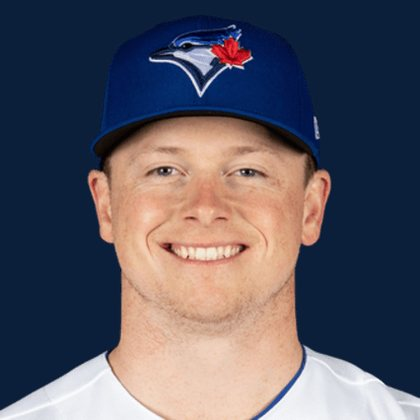

BASEBALLKEEP
Dynasty · Redraft · Diamond
Player File · RP TOR

Louis Varland
#77 · RP · Toronto Blue Jays · age 28 · B/T LR · 6' 1" / 205 lbs · MLB debut 2022 · St. Paul, USA
Pitching
| Year | G | GS | W | L | SV | HLD | IP | K | BB | HR | ERA | WHIP | K/9 |
|---|---|---|---|---|---|---|---|---|---|---|---|---|---|
| 2026 | 58 | 0 | 5 | 4 | 28 | 5 | 64.1 | 79 | 17 | 2 | 1.26 | 0.96 | 11.05 |
| 2025 | 74 | 1 | 4 | 3 | 0 | 22 | 72.2 | 75 | 22 | 6 | 2.97 | 1.20 | 9.29 |
Plus
- Keep #115 on the 300. Tradable, not a 1.01.
- Saves board #8.
- SV+H board #3.
- On 17 boards — not a one-list darling.
Minus
- Reliever volatility: the ninth can vanish in a week.
BaseBallKeep Take
Louis Varland is #115 on BaseBallKeep's overall dynasty 300, a 23-source mix anchored by RotoGraphs (Aug 14) and The Dynasty Guru points list (Aug 10). RP for TOR. BK's Pitchers #31. Rest-of-season redraft #123. MLB since 2022. From St. Paul / USA. Bats L, throws R.
BK Value on this rank is 779. Same decaying curve as football: 12,000 at 1.01, a late first a fraction of that. If someone is asking for two firsts, run the calculator. 2026 line: 1.26 ERA, 0.96 WHIP, 79 K in 64.1 IP.
The 23-board average is 115.0 on 17 lists that actually ranked him — unranked sources are skipped, never treated as 999. High 105, low 128.
Dynasty pays the next five years. Redraft pays September. If those two ranks diverge, that is the instruction: hold the kid or cash the veteran.
Flags fly forever. We will refresh this file with The Keep. September baseball is a proving ground, not a coronation.
Every Board
Spread 105–128 · 17 sources
| Source | Rank |
|---|---|
| RotoGraphs Model | 105 |
| FantasyPros Dynasty ECR | 108 |
| CBS Sports | 109 |
| Razzball | 112 |
| ESPN | 113 |
| NFBC ADP | 113 |
| Dynasty League Baseball | 113 |
| Four-Seam Fantasy | 113 |
| ATC ROS | 113 |
| The Athletic | 114 |
| Pitcher List | 116 |
| Baseball Prospectus | 116 |
| The Dynasty Dugout | 116 |
| Baseball America | 116 |
| RotoWire | 125 |
| FanGraphs The Board | 125 |
| Ottoneu | 128 |
On the Wire
Redraft Wire P7: Blue Jays ninth. SV+H monster even if the closer label wobbles.
On The Keep nearby — Chase DeLauter (#113) · Mookie Betts (#114) · Chris Sale (#116) · Carlos Correa (#117)
Same position on the 300 — Cade Smith #84 · Grant Taylor #95 · Mason Miller #122 · Jhoan Duran #141 · David Bednar #153 · Didier Fuentes #171
All players · The Keep · BK News · The Lineup · Pitchers · Calculator